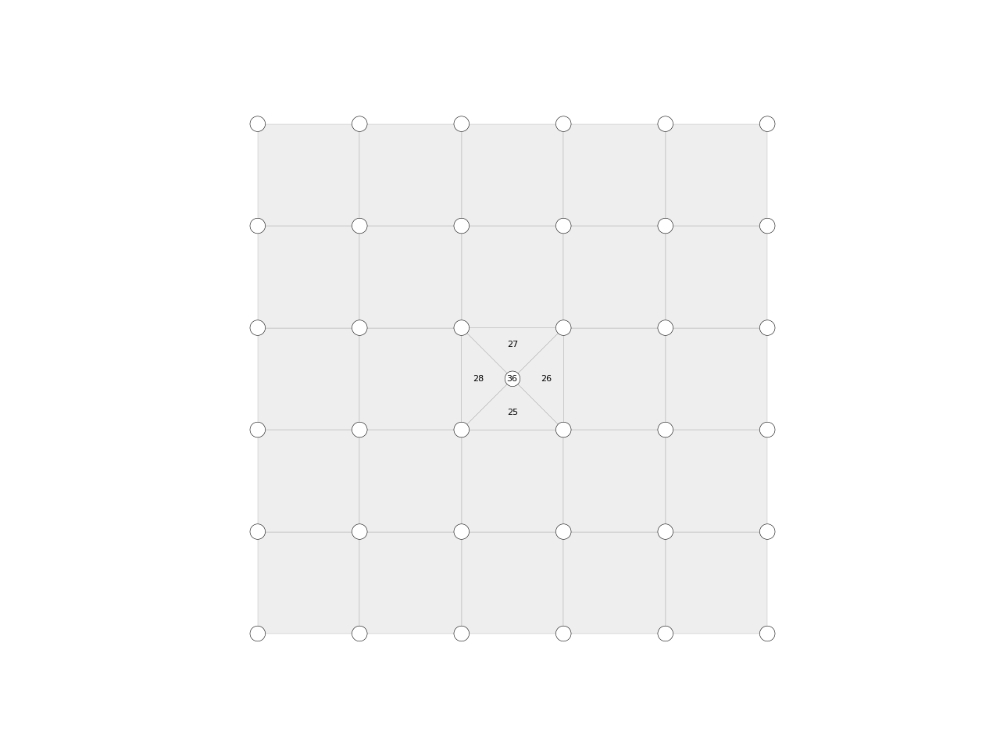

Mesh.insert_vertex
-
Mesh.insert_vertex(fkey, key=None, xyz=None, return_fkeys=False)[source] Insert a vertex in the specified face.
- Parameters
fkey (hashable) – The key of the face in which the vertex should be inserted.
key (hashable, optional) – The key to be used to identify the inserted vertex.
xyz (list, optional) – Specific XYZ coordinates for the inserted vertex.
return_fkeys (bool, optional) – By default, this method returns only the key of the inserted vertex. This flag can be used to indicate that the keys of the newly created faces should be returned as well.
- Returns
hashable – The key of the inserted vertex, if
return_fkeysis false.tuple – The key of the newly created vertex and a list with the newly created faces, if
return_fkeysis true.
Examples
import compas from compas.datastructures import Mesh from compas.plotters import MeshPlotter mesh = Mesh.from_obj(compas.get('faces.obj')) key, fkeys = mesh.insert_vertex(12, return_fkeys=True) plotter = MeshPlotter(mesh) plotter.draw_vertices(radius=0.15, text={key: str(key)}) plotter.draw_faces(text={fkey: fkey for fkey in fkeys}) plotter.show()
